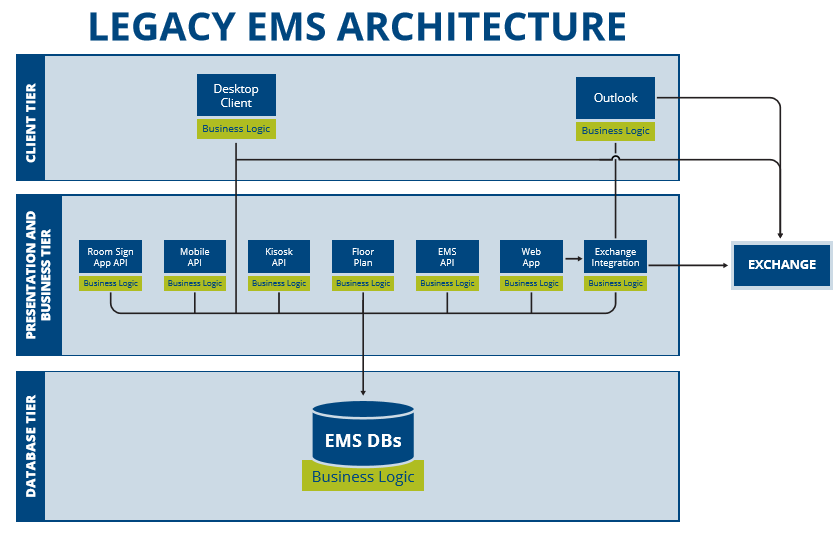

This topic contains introductory information regarding EMS Platform Services:
EMS Platform Services is a Platform as a Service (PaaS) solution offering modern, RESTful APIs. Platform Services enables the development of multi-platform applications that can be customized, cloud-based, scalable and easily integrated. It is a true middle tier, providing a business and resource layer that enables the central development of applications, reducing complexity and development time. Platform Services fosters innovation by ensuring easy maintenance and efficient management of an application's lifecycle.
In the current EMS architecture, databases exchange business logic directly with applications in the business tier. The Platform Services architecture creates an intermediary layer of business logic and resources that provides a buffer between the applications and EMS databases. Fixes, enhancements and/or new features can now be dispersed simultaneously to all products through Platform Services.

In June 2017, the EMS Mobile App was implemented with EMS Platform Services. As of January 2018, the EMS Kiosk App and EMS for Outlook have both been placed on the EMS Platform Services layer. In the future, all EMS applications will consume the Platform Services layer.
Current EMS Platform Services Architecture (January 2018)
For our clients and partners, EMS Platform Services provides a platform for faster, more straightforward custom integrations. Clients will experience a more valuable, consistent user experience across all EMS products. In addition, features and enhancements across all access points will experience faster turn around times. Platform Services has empowered EMS to be a true enterprise solution.
To learn more about installing EMS Platform Services, see
Platform Services provides RESTful APIs that empower customers and partners to build custom, multi-platform applications connected to EMS. Any client/device accessing EMS Platform Services must be a registered Integration Client. The one exception is that anyone can access the public (open) API requests (/status, /health, /clientauthentication).
There are two types of Integrations:
Partner and Custom types can be classified as either of the following two client sub-categories:
NOTE: Creating a new Integration Client will generate a Client ID and Secret pair.
NOTE: There can be multiple active instances of a particular client interacting with the Platform. All devices that share a client/secret will share a common authentication token. If the token expires, all devices will need to authenticate again to get a new shared token.
NOTE: Refer to the API documentation to determine the appropriate token (i.e., client token or web token) for the header field.
Navigate to Platform Services URL e.g. https://yourcompany.com/ems-platform-api to view the API documentation. You can also manually type in the URL (https://yourcompany.com/ems-platform...ic/swagger-ui/). You can view sample API calls for EMS Platform Services (see EMS Platform Services API to view sample).
All requests should be made to URL for EMS Platform Services (e.g., https://yourcompany.com/ems-platform-api).
All dates and times passed to the API requests follow RFC 3339 Standard and must be in UTC.
All DateTimes follow the standard (e.g., 2008-09-08T22:47:31-07:00)
| Response Code | Title |
|
|---|---|---|
| 200 | Success | |
| 400 | Bad Request | |
| 401 | Invalid/Missing Client Credential | |
| 500 | Server Error |
| Method | Description |
|---|---|
| GET | |
| POST | |
| PUT | |
| DELETE | |
| PATCH |